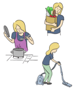

Module: Activities of Daily Living
Janet L. Poole, PhD, OTR/L
Managing Activities of Daily Living
The routine activities that we all do on a daily basis are called activities of daily living. Until there is a problem, we often take these activities for granted. However, day-to-day life can become much more difficult when your illness interferes with your ability to carry out one or more of these activities. In this module, we provide suggestions to manage some of the difficulties that scleroderma may present to your ability to carry out your routine daily activities.